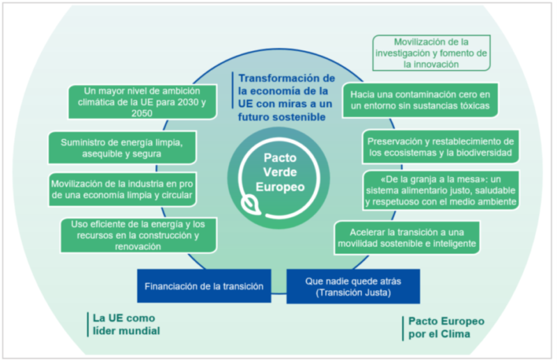
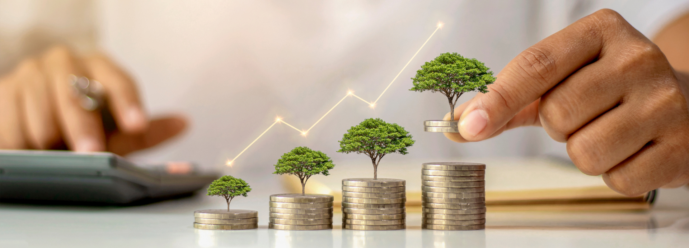

Agenda 2030 y la UE
La Unión Europea se compromete a implementar la Agenda 2030, que incluye 17 Objetivos de Desarrollo Sostenible (ODS) para mejorar la vida de los ciudadanos y proteger el medio ambiente.

Los 17 Objetivos de Desarrollo Sostenible
- 1. Fin de la pobreza: Erradicar la pobreza en todas sus formas en todo el mundo.
- 2. Hambre cero: Acabar con el hambre, lograr la seguridad alimentaria y mejorar la nutrición, promoviendo la agricultura sostenible.
- 3. Salud y bienestar: Garantizar una vida sana y promover el bienestar para todos en todas las edades.
- 4. Educación de calidad: Asegurar una educación inclusiva, equitativa y de calidad, y promover oportunidades de aprendizaje durante toda la vida.
- 5. Igualdad de género: Lograr la igualdad de género y empoderar a todas las mujeres y niñas.
- 6. Agua limpia y saneamiento: Garantizar la disponibilidad y la gestión sostenible del agua y el saneamiento para todos.
- 7. Energía asequible y no contaminante: Asegurar el acceso a energía asequible, confiable, sostenible y moderna para todos.
- 8. Trabajo decente y crecimiento económico: Promover el crecimiento económico sostenido, inclusivo y sostenible, el empleo pleno y productivo, y el trabajo decente para todos.
- 9. Industria, innovación e infraestructura: Construir infraestructuras resilientes, promover la industrialización sostenible y fomentar la innovación.
- 10. Reducción de las desigualdades: Reducir la desigualdad en y entre los países.
- 11. Ciudades y comunidades sostenibles: Hacer que las ciudades y los asentamientos humanos sean inclusivos, seguros, resilientes y sostenibles.
- 12. Producción y consumo responsables: Asegurar modalidades de consumo y producción sostenibles.
- 13. Acción por el clima: Urgentemente combatir el cambio climático y sus impactos.
- 14. Vida submarina: Conservar y utilizar sosteniblemente los océanos, los mares y los recursos marinos para el desarrollo sostenible.
- 15. Vida de ecosistemas terrestres: Proteger, restaurar y promover el uso sostenible de los ecosistemas terrestres, gestionar de manera sostenible los bosques, luchar contra la desertificación y detener la pérdida de biodiversidad.
- 16. Paz, justicia e instituciones sólidas: Promover sociedades pacíficas e inclusivas para el desarrollo sostenible, proporcionar acceso a la justicia para todos y construir instituciones eficaces, responsables e inclusivas a todos los niveles.
- 17. Alianzas para lograr los objetivos: Fortalecer los medios de implementación y revitalizar la Alianza Mundial para el Desarrollo Sostenible.
El Pacto Verde Europeo
El Pacto Verde Europeo busca hacer de Europa el primer continente climáticamente neutro para 2050, promoviendo la economía circular y la transición energética.
Este pacto incluye medidas para reducir las emisiones de gases de efecto invernadero, invertir en tecnologías ecológicas, apoyar la innovación industrial y mejorar la eficiencia energética de los edificios.
Además, se enfoca en la protección de la biodiversidad, la reducción de la contaminación y la promoción de sistemas alimentarios sostenibles.
Financiación de la Sostenibilidad
Instrumentos como el Next Generation EU apoyan la transición ecológica y permiten que las empresas accedan a fondos para proyectos sostenibles.
Además, la UE ha implementado bonos verdes, que son instrumentos financieros destinados a financiar proyectos con beneficios ambientales. Estos bonos ayudan a movilizar capital para iniciativas sostenibles y a promover la inversión en tecnologías limpias.
El Fondo Europeo de Inversiones también juega un papel crucial en la financiación de la sostenibilidad, proporcionando apoyo financiero a pequeñas y medianas empresas que desarrollan proyectos ecológicos.
